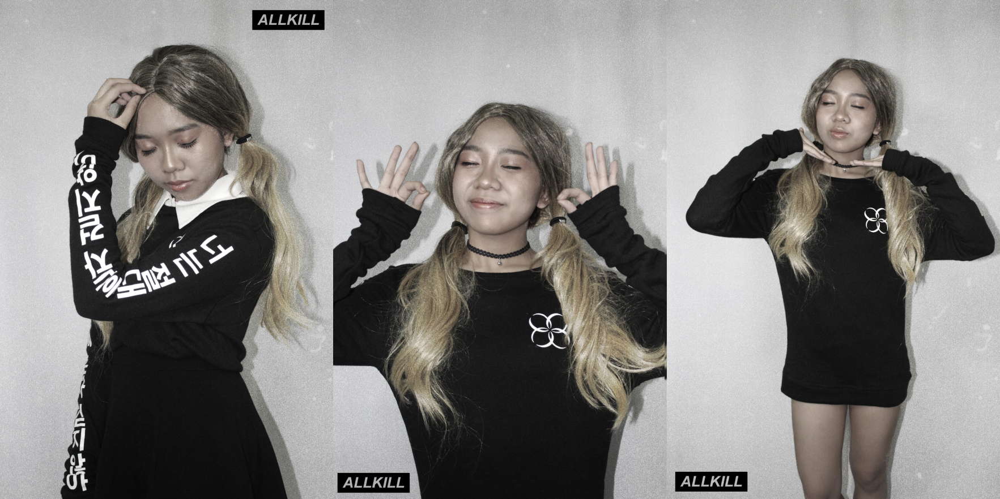

Allkill Apparel
Design and direction for a mock K-Pop-inspired clothing brand.
Year
2017
Key Skills
Art Direction, Graphic Design, Merch Design, Photography

All-kill: (n.) when a song reaches #1 in all realtime charts.
Allkill Apparel was a mockup clothing brand that created minimalistic clothes inspired by Korean culture and aesthetic. Tired of the typical jersey shirts that defined K-pop fan merchandise, I created this brand as a design experiment. I designed the brand’s identity and collateral, along with its first collection. I also shot and edited the photos released.
Theme
The brand’s first collection, “21st Century”, was inspired by BTS’ set list in their “The Wings Tour”. The collection’s name was taken from the song “21st Century Girl”.
Merch Design


Unfortunately, due to lack of preorders, only the Spring Day ringer t-shirt and the black You Never Walk Alone crewneck were printed.
Collateral
DP (top left), teaser (top right), cover photo (bottom)
Photography

You Never Walk Alone crewneck (top), Spring Day Ringer T-shirt (bottom)
Credits
- Eliza Bumanlag: model (thank you for being hot!)
- Natalia Aguilar: HMUA & stylist (thank you for making Eliza hot!)
- Paolo Soledad & MJ Dignadice: photoshoot assistants (thank you for all the lighting help!)